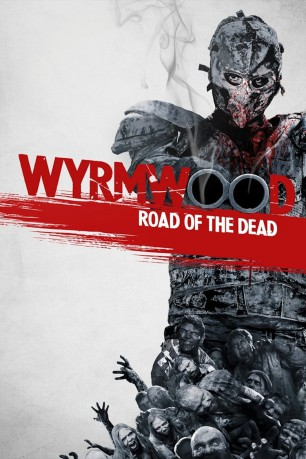

#8562 Wyrmwood - Road of the Dead
Alternativ: Wyrmwood: Road of the Dead (Englischer Titel)
 
 IMDB-Wertung: 6.3 / 10
IMDB-Wertung: 6.3 / 10  Metascore: 0
Metascore: 0 
Mit dem Ausbruch einer globalen Zombie-Apokalypse hat der Mechaniker Barry so ziemlich alles außer seiner Schwester Brooke verloren. Als die eines Tages jedoch von einer Bande Maskierter entführt wird, ist Barry am Boden zerstört. Doch er beschließt, nicht untätig zu bleiben und sich auf die Suche nach ihr zu machen. Einen Verbündeten findet er in dem Draufgänger Benny, mit dem er sich durch eine Welt schlägt, in der nicht nur die wandelnden Toten, sondern auch die Überlebenden eine Bedrohung sind – schuld ist der Streit um die knappen Ressourcen. Bis an die Zähne bewaffnet, kämpfen sich Barry und Benny durch schier endlose Zombie-Horden, um Brooke aus den Fängen eines psychopathischen Arztes zu retten, der grausame Experimente durchführt, an Menschen und Zombies gleichermaßen…
Jahr: 2014
Dauer: 98 Minuten
FSK: 18
Land: Australien Studio: Tiberius FilmTonspuren: DTS - ,
Untertitel:
Auflösung: 1080p (1920x1080) Größe: 6666 MB
Genre: Action, Horror, Komödie
Regisseur: Kiah Roache-Turner
Drehbuch: Kevin Wade
Soundtrack: Michael Lira
Darsteller:
- Jay Gallagher als Barry
- Bianca Bradey als Brooke
- Keith Agius als Frank
- Luke McKenzie als The Captain
- Cain Thompson als Kelly / McGlaughlin / Zombie
- Yure Covich als Chalker
- Meganne West als Meganne
- Ellie Poussot als Doctor's Captive #3
- Brendan Byrne als Soldier at End #2
- Jesse Rowles als Zombie
- Leon Burchill als Benny
- Berynn Schwerdt als The Doctor
- Damian Dyke als Soldier Thompson / Soldier at End #1
- Catherine Terracini als Annie
- Beth Aubrey als Charlie
- Sheridan Harbridge als Cherry
- Damion Hunter als Benny's Brother Tony
- Alfred Coolwell als Benny's Brother Mulla
- Ellen Williams als Doctor's Captive #1
- Adam Penklis als Doctor's Captive #2
- Matthew Anscom als Zombie
- John Arrow als Zombie
- Aaron Attard als Zombie
- Craig Bourke als Zombie
- John Michael Burdon als Zombie
- Cristian Campano als Zombie
- Aaron Collins als Zombie
- Dave Fong als
- Clayton Galipo als Zombie
- Dane Hallett als Zombie
- Avin Jason als Zombie
- Ella Louise John als Zombie
- Daniel Martin als Zombie
- Tom Matthews als Zombie
- Simon Mak Murrell als Zombie
- Tim Namour als Zombie
- Melvin Okoronkwo als Zombie
- Justen Petch als Zombie
- Tom Rushton als Zombie
- Adam Sanders als Zombie
- Michael Shilman als Zombie
- Craig Sloss als Zombie
- John Luke Sloss als Zombie
- Kya Stewart als Zombie
- Stefan Whyte als Zombie
- Deborah Joyce als Captive (uncredited)
Datei: X:\FSK18-2014\Wyrmwood - Road of the Dead (2014, FSK18, 1920x1080).mkv seit 22.03.2018
Festplatte: FSK18
 Es gibt insgesamt 27 Filme in der Gruppe 'FSK18-2014'
Es gibt insgesamt 27 Filme in der Gruppe 'FSK18-2014'